BlockOut — Demo có ảnh: booster đồng hồ, Rocket, UFO và Time Freeze
Mục lục bài phân tích
- Ví dụ xuyên suốt: lấy thêm thời gian từ một khối trên bàn
- BO-DEMO-01 — Đánh dấu booster chưa có nghĩa là đã tiêu
- BO-DEMO-02 — Prebooster đồng hồ tạo một mục tiêu phải thu
- BO-DEMO-03 — Rocket thu đồng hồ và tác động nhiều bộ đếm trong một thao tác
- BO-DEMO-04 — Hủy chọn UFO không tiêu lượt
- BO-DEMO-05 — Time Freeze giữ đồng hồ, không cộng thẳng 10 giây vào con số đang hiện
- BO-DEMO-06 — Kết thúc demo, sổ tài nguyên và ranh giới phiên
- Những nhánh còn phải kiểm bằng phiên riêng
- Đánh giá thiết kế và cách viết đặc tả
Nhận định: ba cách mua thêm cơ hội trong BlockOut tạo ra ba hành vi khác nhau. Booster đồng hồ trước màn gắn phần thưởng thời gian lên khối; Rocket loại khối và có thể thu phần thưởng đó; Time Freeze giữ nguyên đồng hồ trong một khoảng thời gian. Gộp cả ba thành “booster cộng thời gian” sẽ làm sai luật, sai bài toán level và sai giá trị của mỗi vật phẩm.
Nguồn: phiên ADB trực tiếp trên LDPlayer ngày 10/10/2026, bản 1006. Tài khoản ở level 350, kho đồ lớn đã có từ trước. Phiên này không sửa save, config hoặc layout. Ảnh mới dưới đây cùng thư mục screens/deep_20261010; nhật ký hành động, thời gian và snapshot nằm tại facts/runtime/deep_20261010. Case cũ ở bài QA đợt đầu được giữ riêng.
Ví dụ xuyên suốt: lấy thêm thời gian từ một khối trên bàn
Bối cảnh: coin 996.179; prebooster đồng hồ 999; prebooster tên lửa 999; Rocket trong màn 999; UFO 998; Time Freeze 1.001. Hai nhóm “tên lửa trước màn” và “Rocket trong màn” không dùng chung bộ đếm trong ledger này. Màn 350 có timer gốc 60 giây, các rèm 2/9 và cửa đếm 13/2/23.
| Bước | Người chơi làm gì | Game phản hồi thật | Số dư / trạng thái |
|---|---|---|---|
| 1 | Mở prelevel, chọn biểu tượng đồng hồ 10 | Có dấu tích chọn booster | Kho vẫn 999; chưa bấm Play |
| 2 | Đóng prelevel, mở lại | Lựa chọn đồng hồ không còn được đánh dấu | Kho vẫn 999 |
| 3 | Chọn lại đồng hồ rồi bấm Play | Một khối vàng 1×1 được gắn đồng hồ 10 | Timer vẫn 01:00; kho đồng hồ 999 → 998 |
| 4 | Mở Rocket | Hiện Select a block to eliminate | Rocket vẫn 999 khi đang chọn |
| 5 | Chọn chính khối vàng có đồng hồ | Khối biến mất, hiện +10s cạnh timer | Ảnh ngay sau: 01:09; Rocket 999 → 998 |
| 6 | Quan sát các khóa | Rèm và cửa cùng phản hồi với khối bị loại | Rèm 2→1 và 9→8; cửa 13→12, 2→1, 23→22 |
| 7 | Mở UFO rồi chạm lại nút UFO | Thoát chế độ chọn, không loại khối | UFO giữ 998 |
| 8 | Dùng Time Freeze | Hiệu ứng băng, thanh thời gian phụ hiện | Time Freeze 1.001 → 1.000; timer 01:05 |
| 9 | Chụp tiếp sau khoảng 5 giây | Timer vẫn 01:05, băng còn hoạt động | Chưa có khối nào mới bị loại |
| 10 | Chụp sau khoảng 8 giây nữa | Băng đã hết; đồng hồ đếm tiếp | Timer 01:01 |
Luồng: chọn booster trước màn → gắn đồng hồ lên khối → loại khối → cộng thời gian và giảm bộ đếm khóa → dùng Time Freeze để giữ đồng hồ → hết hiệu ứng thì đếm tiếp.
BO-DEMO-01 — Đánh dấu booster chưa có nghĩa là đã tiêu
Tiền điều kiện: popup Level 350, kho đồng hồ 999. Thao tác: chạm booster đồng hồ, chụp ảnh, đóng popup bằng X, mở Level 350 lại. Kết quả: lần mở lại không còn dấu chọn và số lượng vẫn 999. Ý nghĩa: lựa chọn thuộc bước chuẩn bị; đóng popup hủy lựa chọn ở tình huống này. Không được coi lần chạm này là một lần sử dụng khi đo conversion hoặc mức tiêu thụ.

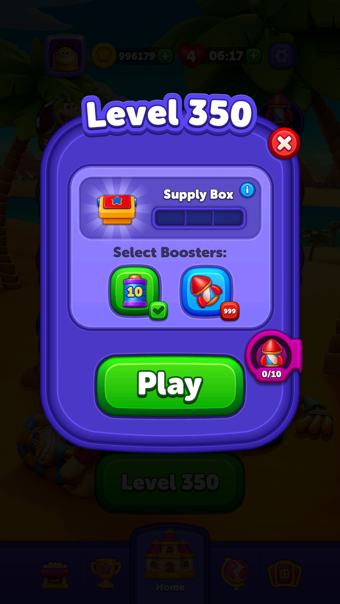

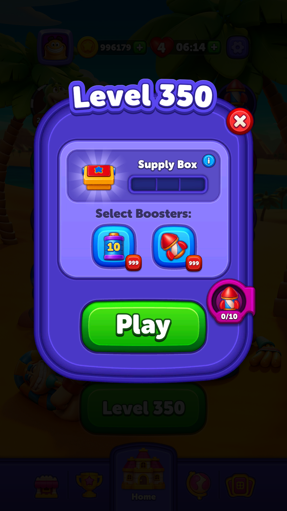
Case chấp nhận cho game tương tự: nếu người chơi chọn booster rồi đổi ý rời popup, kho đồ phải giữ nguyên; UI lần sau phải phản ánh chính xác việc có lưu lựa chọn hay không. Quy tắc “xóa lựa chọn” là kết quả quan sát của BlockOut ở phiên này, không phải yêu cầu duy nhất cho mọi game.
BO-DEMO-02 — Prebooster đồng hồ tạo một mục tiêu phải thu
Tiền điều kiện: chọn lại đồng hồ 10 rồi bấm Play. Kết quả: timer đầu màn vẫn 01:00, khối vàng vuông nhỏ ở hàng trên vùng rèm mang biểu tượng 10. Snapshot entered ghi currency type 17: 999 → 998. Khối vàng ở phiên không dùng prebooster trước đó không mang biểu tượng này.

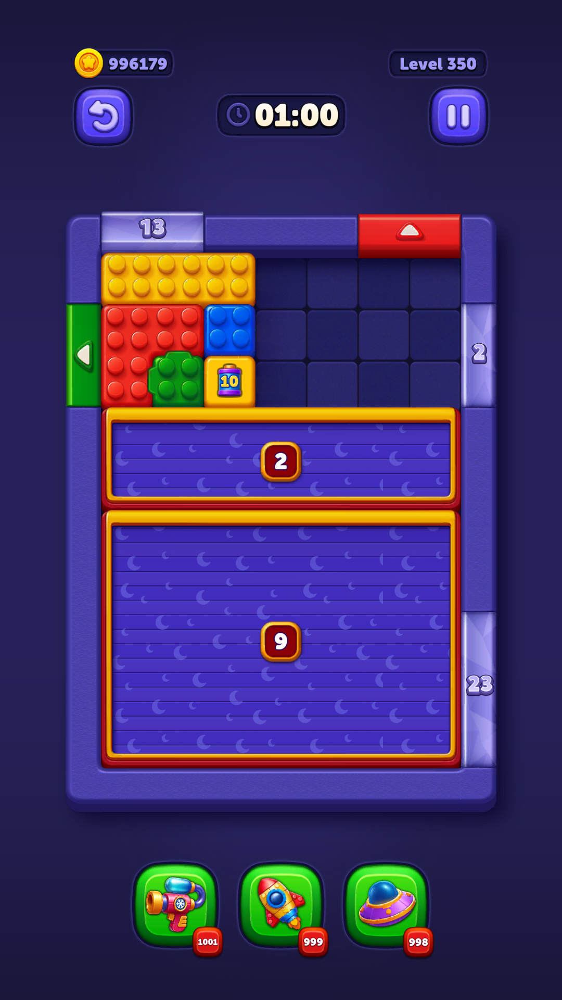
Ý nghĩa với thiết kế level: người chơi phải đưa được khối mang đồng hồ ra ngoài hoặc dùng một công cụ phù hợp. Một khối đặt sâu sau rèm có giá trị thực dụng khác khối gần lối ra, dù cùng ghi “10”. Không nên định giá hiệu quả của booster chỉ bằng 10/60 = 16,7% thời gian màn; đó chỉ là tỷ lệ thời gian danh nghĩa, chưa tính khả năng thu được, thời điểm thu và chi phí mở đường.
Ví dụ giả định để cân bằng: hai layout cùng 60 giây; ở layout A người chơi thường lấy được đồng hồ sau 5 giây, ở B sau 50 giây. Hai vị trí có thể cho tỷ lệ hoàn thành khác nhau dù config thời gian giống nhau. Đây là giả thuyết cần dữ liệu cohort; phiên này không đo tỷ lệ thắng.
BO-DEMO-03 — Rocket thu đồng hồ và tác động nhiều bộ đếm trong một thao tác
Tiền điều kiện: khối vàng có đồng hồ còn trên bàn; Rocket 999. Thao tác: bật Rocket rồi chạm khối đó. Kết quả quan sát: khối mất, chữ +10s hiện cạnh timer, ảnh ghi 01:09 vì đồng hồ đã bắt đầu đếm; Rocket còn 998. Không viết thành “booster cho 9 giây”: giao diện +10s và thời gian đã trôi là hai đại lượng khác nhau.

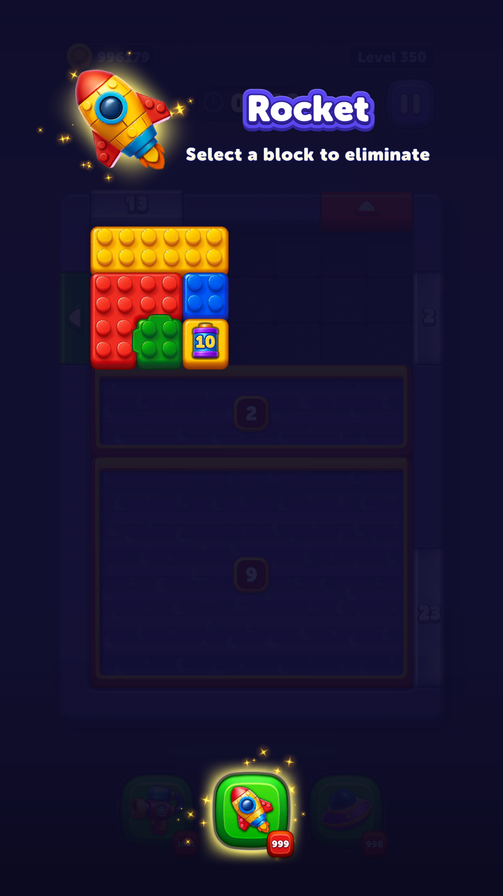

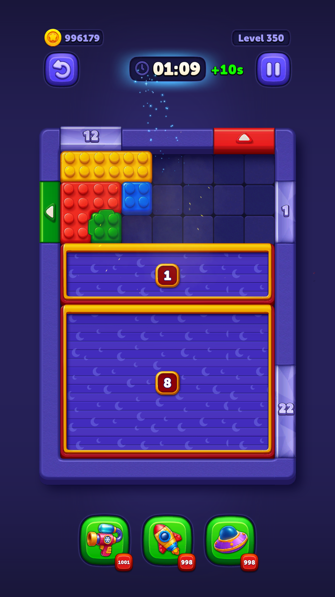
| Đại lượng | Trước | Sau ảnh tác động | Cách đọc |
|---|---|---|---|
| Kho Rocket trong màn | 999 | 998 | Một lần dùng thành công |
| Rèm trên | 2 | 1 | Chưa mở; còn một đơn vị |
| Rèm dưới | 9 | 8 | Tác động không chỉ giới hạn ở rèm gần khối |
| Cửa trên | 13 | 12 | Bộ đếm được cập nhật cùng thao tác |
| Cửa phải trên | 2 | 1 | Vẫn khóa tại thời điểm ảnh |
| Cửa phải dưới | 23 | 22 | Chưa thể coi là mở đường ngay |
Đối chiếu mã: DurationBlockObstacle.OnBlockExitFromBoard kiểm tra đúng khối chủ rồi gọi LevelTimer.AddExtraTime; xem casebook gameplay. Cặp ảnh bổ sung bằng chứng runtime cho nhánh dùng Rocket, không tự chứng minh mọi công cụ khác đều phát cùng callback hoặc cùng thứ tự thực thi.
Hàm ý: một Rocket có ba lợi ích trong tình huống này: giải phóng ô, tiến gần tới mở khóa và thu thời gian. Đánh giá booster chỉ bằng “xóa một khối” bỏ mất giá trị kết hợp. Tuy vậy, bỏ hai booster để lấy 10 giây có đáng hay không còn phụ thuộc xác suất thắng; demo này không chứng minh lựa chọn đó tối ưu.
BO-DEMO-04 — Hủy chọn UFO không tiêu lượt
Tiền điều kiện: UFO 998, không có UFO đang bay. Thao tác: chạm UFO để vào chọn màu/khối, sau đó chạm lại đúng nút UFO. Kết quả quan sát: lớp chọn đóng; bàn giữ nguyên; UFO vẫn 998. Snapshot cuối xác nhận currency type 3 giữ 998.

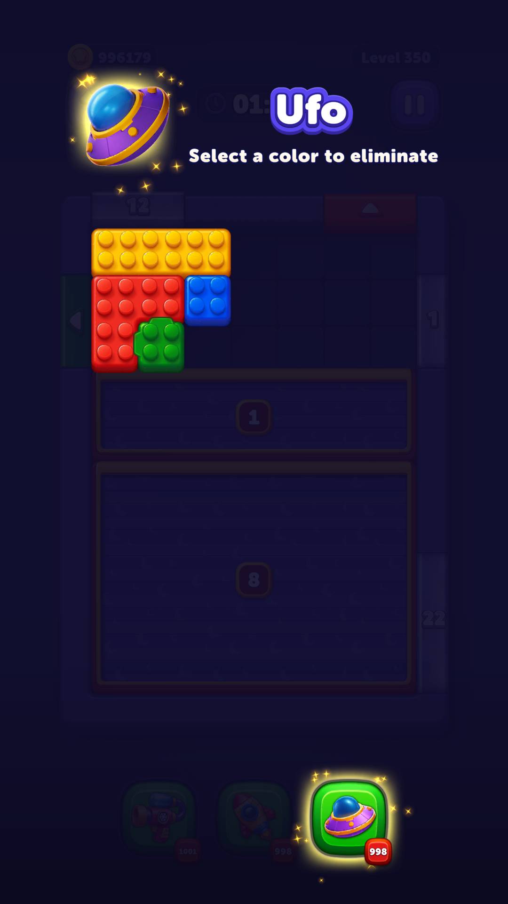

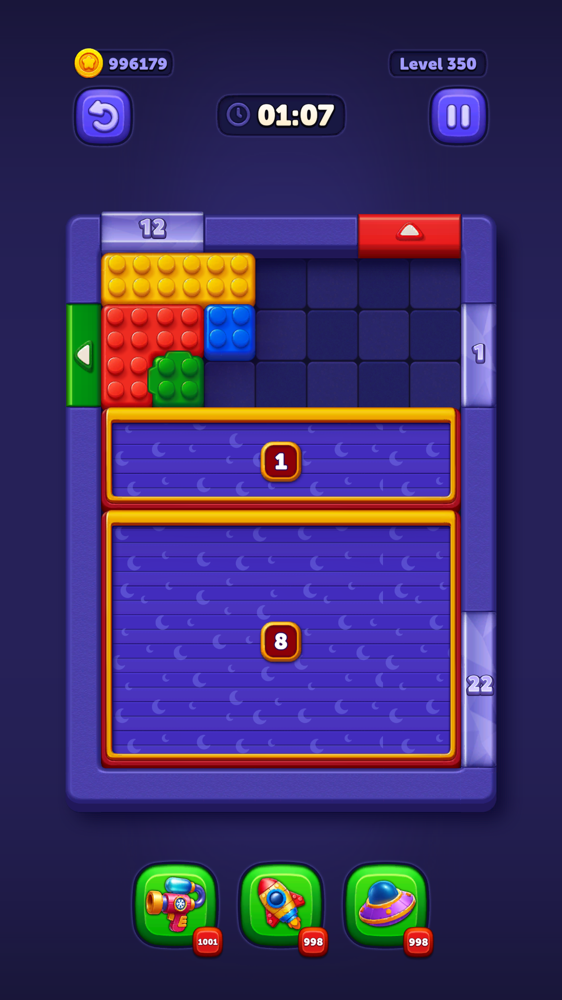
Phạm vi: đây là case hủy lựa chọn. Nhánh UFO tác động nhiều khối cùng màu đã có ảnh ở đợt đầu và được giải thích kỹ tại bài cơ chế; không dùng ảnh hủy này làm bằng chứng cho phạm vi sát thương.
BO-DEMO-05 — Time Freeze giữ đồng hồ, không cộng thẳng 10 giây vào con số đang hiện
Tiền điều kiện: bàn còn 01:05 trước hiệu ứng; Time Freeze 1.001. Thao tác: chạm Time Freeze, không di chuyển khối, chụp trong hoạt ảnh; chụp tiếp sau khoảng 5 giây và 8 giây tiếp theo. Kết quả: số lượng còn 1.000; ảnh đầu 01:05, ảnh giữa vẫn 01:05 và thanh băng còn hơn nửa; ảnh cuối hết băng, timer 01:01. Khoảng chờ có thêm thời gian thực hiện lệnh ADB/chụp, không dùng ba mẫu này để tuyên bố phép đo chính xác tới mili giây.

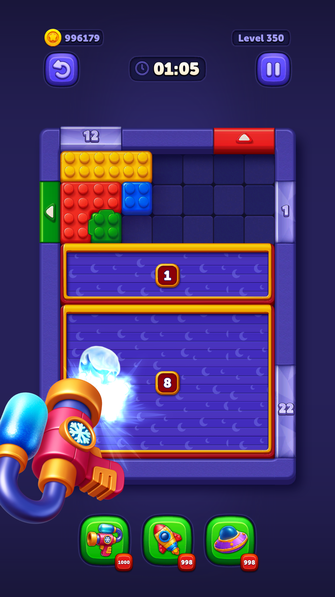

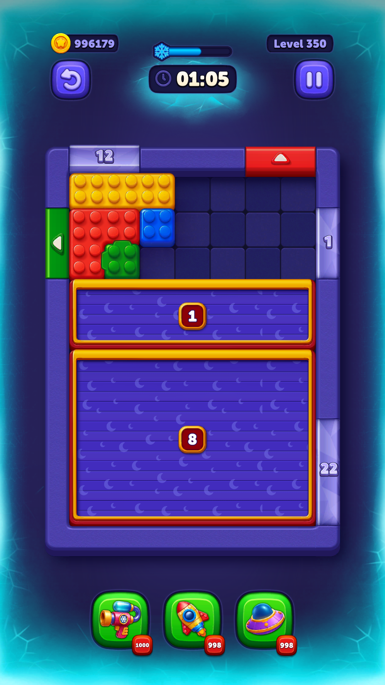

Bất biến quan sát: không có thêm một khoản trừ vật phẩm khi hiệu ứng kết thúc, không loại khối, không giảm bộ đếm khóa. Khác với đồng hồ trên khối: Time Freeze cho khoảng thời gian hành động mà không làm giảm timer; đồng hồ được thu làm tăng trực tiếp timer và gắn với việc loại đúng khối. Khác với Pause: Freeze giữ người chơi trong gameplay; Pause che bàn bằng menu. Phiên này không đo khả năng kéo khối trong từng frame của hiệu ứng.
BO-DEMO-06 — Kết thúc demo, sổ tài nguyên và ranh giới phiên
Sau chuỗi trên, người kiểm thử chọn Quit. Trong đoạn thoát, một thao tác chạm tiếp tại vị trí nút đã đi qua màn Failed/Try Again và bắt đầu lại level 350; ảnh BO-D23-exit-result cho thấy layout được khởi tạo lại, timer 01:00, khối vàng không có đồng hồ. Sau đó màn thử lại được thoát bằng menu, dừng ở Failed và đóng về Home. Vì vậy, ledger cuối bao gồm hai lần vào/thoát màn, không mô tả nó là chi phí của một lần Quit.

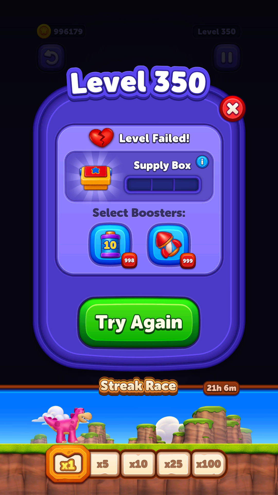

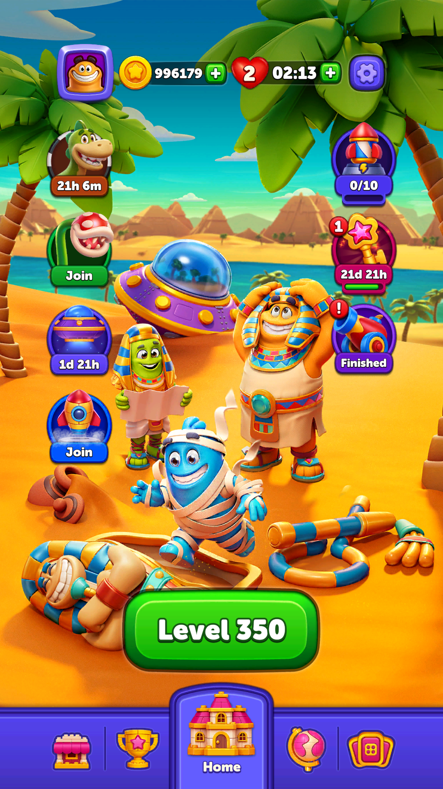
 2 mạng. Không có giao dịch coin trong demo này.
2 mạng. Không có giao dịch coin trong demo này.| Kho / tiến độ | Trước toàn phiên | Sau toàn phiên | Giải thích |
|---|---|---|---|
| Coin | 996.179 | 996.179 | Không dùng Play On hoặc mua bằng coin |
| Đồng hồ trước màn (type 17) | 999 | 998 | Một lần chọn và bắt đầu màn |
| Tên lửa trước màn (type 16) | 999 | 999 | Không chọn |
| Rocket trong màn (type 4) | 999 | 998 | Loại đúng khối đồng hồ |
| UFO (type 3) | 998 | 998 | Chỉ mở rồi hủy chọn |
| Time Freeze (type 5) | 1.001 | 1.000 | Một lần kích hoạt |
| levelProgress | 350 | 350 | Chưa thắng màn |
| retryCount | 3 | 5 | Hai lần vào màn trong cả đoạn demo và thoát |
| Mạng nhìn thấy trên Home | 4 | 2 | Hai lần bỏ màn; có đồng hồ hồi mạng đang chạy |
Quan sát vận hành: lúc mở BlockOut, những ảnh đầu đen trong thời gian tải; sau khởi động lại và chờ, game vào được event Finished rồi Home. Không kết luận GPU, thiếu bộ nhớ hay lỗi mạng từ màu đen. Ảnh trắng/đen lúc tải không được dùng thay ảnh gameplay trong bài.
Những nhánh còn phải kiểm bằng phiên riêng
| Case đề xuất — chưa chạy | Tiền điều kiện / thao tác | Kỳ vọng cần xác minh | Lý do |
|---|---|---|---|
| Thu đồng hồ bằng kéo bình thường | Đưa khối đồng hồ ra cửa cùng màu | Có cùng +10s và cập nhật khóa như Rocket? | Nhánh runtime hiện tại chỉ xác minh Rocket |
| Đồng hồ trên khối nhiều lớp | Tạo tình huống hợp lệ trong bản QA, loại lớp ngoài | Thời gian phát ở lớp nào, một lần hay nhiều lần? | Không suy từ khối vàng một lớp |
| Dùng Freeze lần hai khi đang đóng băng | Hai vật phẩm trở lên, bấm lúc thanh còn nửa | Cộng dồn, làm mới, hay chặn? | Một lần dùng không cho biết luật xếp chồng |
| Hết giờ và Rocket đồng thời | Khối đồng hồ còn trên bàn gần 0 giây | Ưu tiên timeout hay phần thưởng +10s? | Ảnh01:09 không chạm biên tranh chấp |
| Hủy chọn lúc mất focus Android | Đang chọn UFO, đưa app ra nền rồi vào lại | Trạng thái chọn/kho/timer có nhất quán? | Không chạy vì cần một phiên gián đoạn riêng |
| Chạm nhanh từ Quit sang màn kế | Lặp vị trí nút khi Failed xuất hiện | Có cần khóa input ngắn để tránh Try Again ngoài ý định? | Phiên này ghi nhận một lần vào lại; chưa định lượng tỷ lệ tái hiện |
Đánh giá thiết kế và cách viết đặc tả
Điểm mạnh: một mục tiêu có thể tác động nhiều hệ thống nhưng feedback nhìn thấy ngay: +10s, khối biến mất, các bộ đếm giảm. Booster được chọn trước khi trừ giúp người chơi kiểm tra quyết định. Điểm khó học: hai biểu tượng thời gian dễ bị hiểu cùng nghĩa; người chơi cần biết loại nào cộng giây sau khi thu khối, loại nào tạm dừng đồng hồ. Đề xuất: trong hướng dẫn hoặc tooltip, nói bằng hành động “Giải phóng khối đồng hồ để nhận +10 giây”, tránh chỉ mô tả “thêm thời gian”.
Theo cách trình bày của RoyalMatch, bài này giữ một ví dụ xuyên suốt, ảnh theo bước và ledger trước/sau. Sáu case là sáu nhánh quan sát trong chuỗi; không phải sáu tài khoản, không phải đo retention, doanh thu hoặc xác suất thắng.
Đọc tiếp: luật di chuyển, vật cản và UFO, kinh tế và event, hợp đồng trạng thái, phân khúc người chơi.